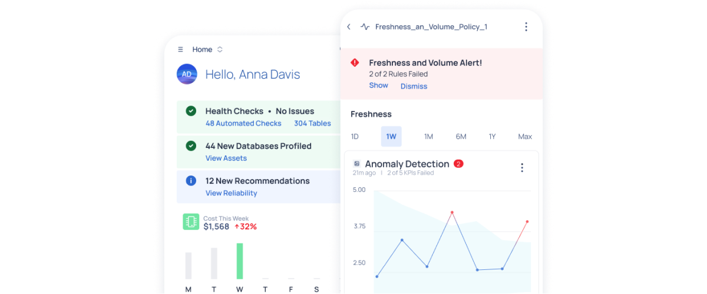
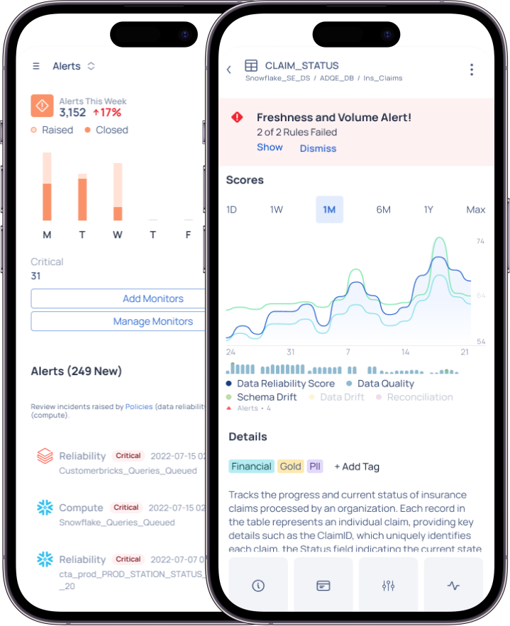

In the rapidly evolving data landscapes of modern enterprises, data quality issues can significantly disrupt business operations. Many organizations struggle with identifying and addressing anomalies in their data in a timely and efficient manner. The primary challenges include the lack of proactive monitoring systems, delayed anomaly detection, inefficient root cause analysis, and subsequent slow response to correct underlying data integrity issues. This results in diminished trust in data-driven decisions, potentially leading to significant business and financial repercussions.

Contribution: Principle UX Designer, Interaction Design, Prototyping
Target Users: Data Scientists, Data Engineers
Products: Data Observability and Incident Management
Outcomes: Users reported greater flexibility in monitoring data health, with workflows becoming more streamlined and timelines accelerated. The improved accessibility fostered stronger trust in data-driven decisions by ensuring that anomalies were identified and resolved promptly. By enhancing convenience and empowering on-the-go responsiveness, the mobile solution helped organizations mitigate the operational and financial risks associated with poor data quality, reinforcing the platform’s value across modern, fast-paced enterprise environments.
Data Observability Mobile is an exploratory design spike aimed at assessing the usability of a mobile form factor alongside the existing desktop platform. This mobile interface offers an alternative modality for unsupervised monitoring and proactive anomaly detection across data systems. By integrating mobile functionality, the platform enhances convenience and flexibility, allowing users to monitor data health, detect anomalies, and respond to issues on the go. This approach not only improves response times but also streamlines workflows, accelerating timelines and boosting overall efficiency. The goal is to empower organizations with seamless, intuitive access to critical data insights anytime, anywhere.
The primary users of the Mobile Data Observability app are data engineers, data analysts, and IT operations teams in enterprise environments. These users need proactive, real-time insights to monitor data health, detect anomalies, and respond to issues quickly, even when they’re away from their desktops. The app empowers them to maintain data integrity and trust, ensuring uninterrupted business operations.
Data Observability Mobile offers seamless anomaly detection on the go, allowing users to continuously monitor data systems from any location. This mobile-first approach ensures faster detection and response to issues, regardless of where or when anomalies occur.

Receive real-time alerts and notifications directly on your mobile device, enabling immediate action when deviations or anomalies are detected. This ensures that stakeholders are informed instantly, minimizing delays in addressing critical issues.
The approach taken in this project focused on exploring the viability and effectiveness of a mobile interface for Data Observability. By extending the platform's functionality to mobile devices, users gain the flexibility to monitor, detect, and respond to data anomalies in real-time, wherever they are. This design spike aimed to assess how well the mobile form factor complements the existing desktop platform, offering a seamless, intuitive, and efficient modality for proactive data management.
Through this mobile interface, organizations can accelerate response times, reduce troubleshooting delays, and improve data integrity, all while enhancing user convenience. The integration of real-time alerts, root cause analysis, and KPI monitoring ensures that users remain informed and can take swift corrective action, resulting in improved business outcomes. Future steps will focus on further refining the mobile interface based on usability feedback, ensuring that it meets the diverse needs of modern data-driven enterprises.